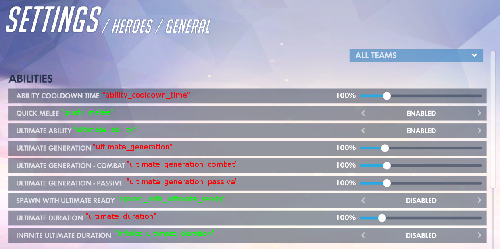
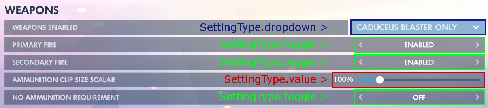

public void SetHeroSettings( params SetHero[] herodata )
herodata
Settings of the heroes you want to change.
Type: Deltin.CustomGameAutomation.SetHero
public SetHero( Hero? hero, BotTeam team, string[] set, object[] setto )
hero
Hero to change settings for. Set to null for general.
Type: Deltin.CustomGameAutomation.Hero?
team
Team to change settings for.
Type: Deltin.CustomGameAutomation.BotTeam
set
Names of settings to change. Must be the same length as setto.
Type: System.String[]
setto
Change setting to. Must be same length as set.
Type: System.Object[]
Change individual hero settings.
Full list of settings here.
The code below will set both teams' Ultimate Generation to 500%.
using System; using Deltin.CustomGameAutomation; ... static void Main(string[] args) { CustomGame cg = new CustomGame(); cg.SetHeroSettings( new SetHero ( null, // General BotTeam.Both, // Both teams. new string[] { "ultimate_generation" }, // Ultimate generation setting. new object[] { 500 } // Set ultimate generation to 500. ) ); }

Values and dropdown requires an integer in the set array. Toggle requires a bool.
You can also target multiple settings. The code below will set ultimate generation to 500%, ability cooldown time to 25%, and health to 250%.
using System; using Deltin.CustomGameAutomation; ... static void Main(string[] args) { CustomGame cg = new CustomGame(); cg.SetHeroSettings( new SetHero ( null, // General. BotTeam.Both, // Both teams. // Set ultimate generation to 500%, ability cooldown time to 25%, and health to 250%. new string[] { "ultimate_generation", "ability_cooldown_time", "health" }, new object[] { 500, 25, 250 } ) ); }
To set a toggle setting, set the setting to true for enable/on or false for disable/off. The code below will turn quick melee off.
using System; using Deltin.CustomGameAutomation; ... static void Main(string[] args) { CustomGame cg = new CustomGame(); cg.SetHeroSettings( new SetHero ( null, // General. BotTeam.Both, // Both teams. new string[] { "quick_melee" }, // Quick melee setting. new object[] { false } // Set setting to off. ) ); }
To set a dropdown setting, for example Torbjorn's weapons to only Forge Hammer, you need to set it to the index of the option you want.
0 = ALL
1 = RIVET GUN ONLY
2 = FORGE HAMMER ONLY
using System; using Deltin.CustomGameAutomation; ... static void Main(string[] args) { CustomGame cg = new CustomGame(); cg.SetHeroSettings( new SetHero ( Hero.Torbjorn, // Torbjorn hero. BotTeam.Both, // Both teams. new string[] { "weapons_enabled" }, // Weapons enabled setting. new object[] { 2 }, // Set to forge hammer only. ) ); }
You can also target multiple heroes. The code below will set Ana's sleep dart cooldown to 0%, and torbjorn's equipable weapon to "Forge hammer only".
using System; using Deltin.CustomGameAutomation; ... static void Main(string[] args) { CustomGame cg = new CustomGame(); cg.SetHeroSettings( new SetHero ( Hero.Torbjorn, // Torbjorn hero. BotTeam.Both, // Both teams. new string[] { "weapons_enabled" }, // Weapons enabled setting. new object[] { 2 }, // Set setting to. ), new SetHero ( Hero.Ana, // Ana hero. BotTeam.Both, // Both teams. new string[] { "sleep_dart_cooldown_time" }, // Ana sleep dart cooldown setting. new object[] { 0 }, // Set setting to 0. ) ); }